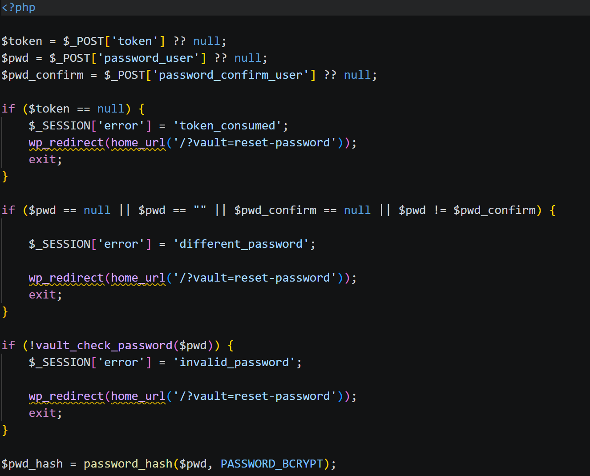

Jolan BERTIN S4A1
jolan.bertin@edu.univ-fcomte.frSavoir-faire techniques
Cette partie permet de présenter et évaluer les savoir-faire techniques employés durant mon stage.S'auto-former et utiliser un nouveau langage : PHP
Savoir-faire élémentaires : S'auto-former sur de nouveaux langages et outils et Lier le backend et le frontend d'une application web (en utilisant le modèle MVC) .

Trace 7 : Code en PHP pour vérifier la validité des mots de passes entrées lors de la réinitialisation du mot de passePuisque j'ai développé l'application web qui recense des accès d'assurances en PHP/MySQL et comme je n'avais jamais codé en PHP, j'ai du me former à ce langage par moi même . En effet, dans ce projet, PHP est primordial car il permet de notamment de lier le frontend et le backend de l'application .
Il est donc central et possède de nombreux rôles comme :
- - lier le backend et le frontend il a le rôle de
Contrôleur,
- - écrire les différentes fonctions pour le bon fonctionnement de l'application, il a aussi le rôle
de Modèle
- - créer et gérer les différentes routes de l'application,
- - et d'injecter des variables/composants/boucles dans la Vue.
La trace 7 correspond à un Contrôleur de l'application qui est appelé lors de la réinitialisation du mot de passe d'un tutilisateur. Lors de cette action, la personne doit saisir 2 fois son nouveau mot de passe (stockés dans les variables $pwd et $pwd_confirm). La première boucle if vérifie que le token envoyé à l'utilisateur et valable 1h n'est pas périmé. Et les autres boucles dans cette ordre si les deux mots de passe sont rempli et identiques puis que le nouveau mot de passe correspond bien à la complexité requise en appelant la fonction vault_check_password().
À chacunes de ces boucles de "vérification", si le test n'est pas bon et qu'on rentre dans la boucle, on stock un valeur en $_SESSION avant de redirigé l'utilisateur sur la page où il se trouve. Cette variable en $_SESSION permettra alors d'affiché sur la page un détail de l'erreur et donc de "communiquer" avec lui.